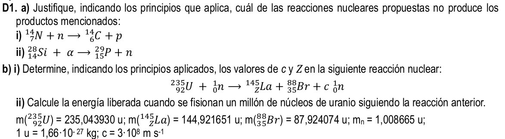
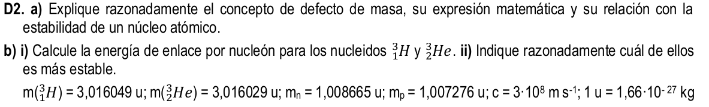

Boletín actualizado a pruebas de 2024
Puedes descargar un boletín de ejercicios aquí.
Puedes descargar un boletín de ejercicios aquí.

a) Para ambos aportados aplicamos las leyes de Soddy. \begin{eqnarray} A=cte \\ Z=cte\\\nonumber \end{eqnarray}
i) $_{7}^{14}\textrm{N} + _{0}^{1}\textrm{n} \rightarrow + _{6}^{14}\textrm{C} + _{0}^{1}\textrm{n} $
En nuestro caso \begin{eqnarray} A \rightarrow 14+1=14 + 1 \\ Z \rightarrow 7+0=6+1\\\nonumber \end{eqnarray} luego puede darse esta reacción.
ii) $_{14}^{28}\textrm{N} + _{2}^{4}\textrm{} \alpha \rightarrow + _{15}^{19}\textrm{P} + _{0}^{1}\textrm{n} $
Al igual que antes:
\begin{eqnarray} A \rightarrow 28+4 \neq 19 + 1 \\ Z \rightarrow 14+2 \neq 15+0\\\nonumber \end{eqnarray} como ninguna se conserva podemos decir que NO puede darse la reacción.
b) $_{92}^{235}\textrm{N} + _{0}^{1}\textrm{n} \rightarrow _{145}^{Z}\textrm{La} +_{35}^{88}\textrm{Br}+ c _{0}^{1}\textrm{n} $
Aplicamos las leyes de Soddy. \begin{eqnarray} A=cte \\ Z=cte\\\nonumber \end{eqnarray}
\begin{eqnarray} A \rightarrow 235+1=145+88+ c \\ Z \rightarrow 92+0=Z+35+0\\\nonumber \end{eqnarray}
Despejando obtenemos los valores c=3 y z=57 por lo que la reacción ajustada es:
$_{92}^{235}\textrm{U} + _{0}^{1}\textrm{n} \rightarrow _{145}^{57}\textrm{La} +_{35}^{88}\textrm{Br}+ 3 _{0}^{1}\textrm{n} $
iii) El defecto de masa para un núcleo viene dado por la expresión de Einstein $\rightarrow E = \Delta m c^2$
$\Delta m = \sum_{}^{reactivos}m -\sum_{}^{productos}m$
Por tanto
$\Delta m = m \left( _{92}^{235}\textrm{U} \right ) + m \left ( _{0}^{1}\textrm{n} \right) - m \left( _{145}^{57}\textrm{La} \right) - m \left( _{35}^{88}\textrm{Br} \right) - 3m \left( _{0}^{1}\textrm{n} \right) $
Sustityendo los datos proporcionados obtenemos
$\Delta m = 0,18086u \cdot \frac{1,66\cdot 10^{-27} kg}{1u}=3,002276\cdot 10^{-28} kg$
Por tanto la energía para un núcleo
$E=\Delta m c^2 \rightarrow E= 2,7020484\cdot 10^{-11} J$
Para un millón de núcleos $E_T = 10^6 \cdot E \rightarrow \boxed{E_T = 2,7020484 \cdot 10^{-5} J}$

a) Defecto de masa: es la diferencia entre la masa de un núcleo y la suma de las masas de todas las partículas que componen al núcleo.
$$\Delta m = \sum m_{nucleones}-m_{núclido}$$
Gracias a Einstein se supo que esta diferencia de masa se convierte en energía en la formación del núcleo atómico. La llamó energía de enlace "la cantidad de energía que se desprende al formarse un núcleo atómico es proporcional al defecto de masa".
$E=\Delta m c^2$
Si el átomo tiene mucha energía será más estable y propicia fisiones nucleares.
b) i) La energía de enlace viene dada por:
$\Delta m = [Z m_p + (A-Z) m_n] - M_n$$
Done M es la masa del núcleo.
Caso a $_{1}^{3}\textrm{H}$
$\Delta m = 1 \cdot m_p + 2m_n -m_H$
$\Delta m = 1,007276+2\cdot (1,008665)-3,016049$
$\Delta m = 0,008577u \frac{1,66\cdot 10^{-27}kg}{1u} \rightarrow \Delta m = 1,423782 \cdot 10 ^{-29} kg$
$E=\Delta m \cdot c^2 \rightarrow \boxed{E=1,28\cdot 10^{-12}J}$
La energía por nucleón --> $E_n=E/A=E/3 \rightarrow \boxed{E_{n}^H =4,273782\cdot 10^ {-13} J}$
Caso b $_{2}^{3}\textrm{He}$
$\Delta m =( 2 \cdot m_p + m_n) -m_{He}$
$\Delta m = (2\cdot(1,007276)+1,008665)-3,016029$
$\Delta m = 0,007188u \frac{1,66\cdot 10^{-27}kg}{1u} \rightarrow \Delta m = 1,193208 \cdot 10 ^{-29} kg$
$E=\Delta m \cdot c^2 \rightarrow \boxed{E=1,0738872\cdot 10^{-12}J}$
La energía por nucleón --> $E_n=E/A=E/3 \rightarrow \boxed{E_{n}^{He} =3,579624\cdot 10^ {-13} J}$
Es más estable el Hidrógeno.
Obra publicada con Licencia Creative Commons Reconocimiento Compartir igual 4.0